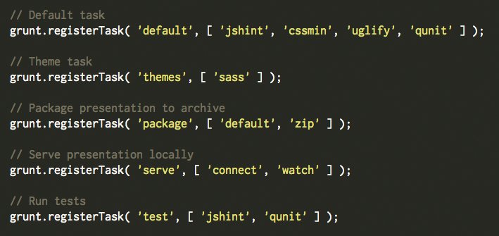

Workflow for the Wary
UX Dev Summit 2014
Made by Lyza Danger Gardner / @lyzadanger
1999
I Broke up with Javascript
(We've since made up)
I committed a directory called htdogs
to our CVS repository at work
htdogsHTDOGS
HTTP +
Dogs?

HTDOGS
HTDOCS
(HTTP + DOCUMENTS)

This is not how I felt
This is how I felt
CVS: Weird, brittle, Byzantine
But our workflow was confounding
"Excuse me...um?"


The Times, They've Changed
Back then:
- We, the engineers
- Wrote code and markup
- Carefully committed to CVS
- Using commands from the sysadmins
- And then...we were done?
We embarked on a web journey
The word developer entered our lexicon
Less separation of concerns
Can't throw it over the wall

But...the wariness...the vagueness
What is a "workflow" and why do I need one?
The orchestration of processes and tools that make things more consistent and less sucky
Orchestration


Orchestrating Components
- Package management
- Scaffold
- Task runner, build
"Weird and hard"
Grunt for People Who Think Things Like Grunt are Weird and Hard
by Chris Coyier
The hard
Grunt is node!
Node is weird!
SASS is ruby!
That sounds hard!
Do you have five minutes?
Install Node!

Install NPM!

Install Grunt...well, sorta
$ npm install -g grunt-cliThis actually installs the grunt CLI, not grunt itself.
Install Ruby?
Possibly not...
$ \curl -sSL https://get.rvm.io | bash -s stable —rubyOne liner: Installs RVM, installs stable ruby
Once more, with feeling
- Install node (requires clicking)
- Install the grunt cli (requires copying and pasting a command)
- Install ruby via a ruby version manager if you need to (likely requires nothing)
Once node and grunt are installed, you're already set up to consume many workflows.
The Weird
What does it do?

Let's get self-referential
The basic workflow for running reveal.js

- Clone repository
- (npm) install dependencies
- Run tasks
Run Tasks
The beating heart of many modern workflows
gruntfile.js
A Good Workflow...
- is easy to understand
- is easy to share
- is easy to set up